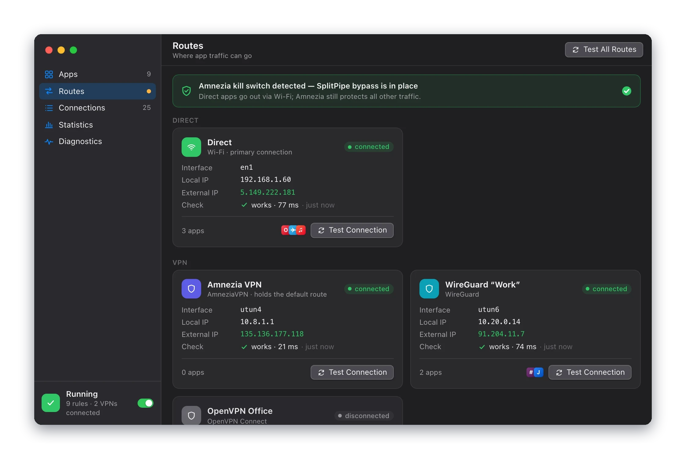
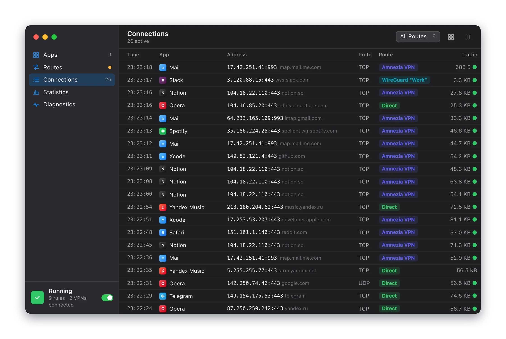
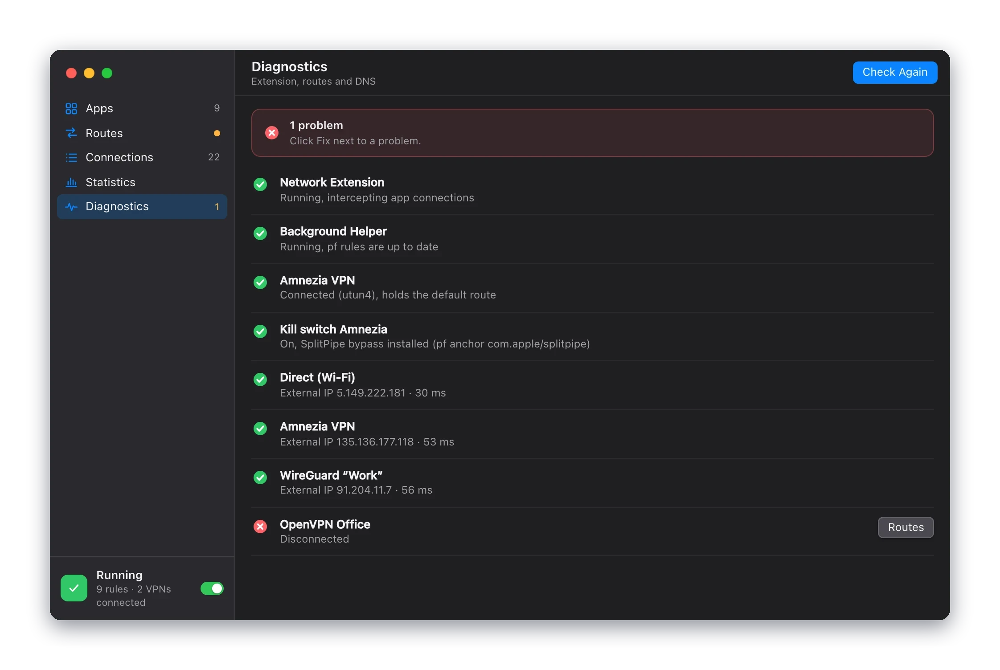

Contents
- How SplitPipe works
- Install and first launch
- Routes
- App rules
- When a route is unavailable
- Rule order
- Kill switch
- Temporary routes
- Apps without a rule
- IP lists
- New apps
- Command-line programs
- Connections
- Statistics and history
- Diagnostics
- Menu bar, widget, Control Center
- Automation
- Settings reference
- Troubleshooting and limits
- Uninstall
How SplitPipe works
A VPN client normally takes over the Mac's default route, so every app's traffic goes into the tunnel. SplitPipe lets you choose a route per app instead: through a specific VPN, directly through Wi-Fi or Ethernet around the VPN, or nowhere.
SplitPipe has three parts:
- The app. The window, the menu bar menu and settings. It keeps your rules and sends them to the extension.
- The network extension. A macOS transparent proxy. It sees each new TCP and UDP connection, knows which app opened it, and sends it through the interface of the chosen route. It keeps working when the app window is closed.
- The background helper. A small root service. While SplitPipe is on, it keeps your VPN's kill switch from blocking Direct traffic, and it resets connections that were opened before SplitPipe took over.
Rules store the role of a route, not an interface name. Direct always means your main physical connection, whether that is Wi-Fi now and Ethernet later. A VPN rule follows that VPN even if its utun number changes after a reconnect.
Install and first launch
- Move SplitPipe.app to the Applications folder. macOS only allows network extensions from apps in Applications.
- Open SplitPipe. The setup window asks for three permissions, one at a time:
- Network Extension. macOS opens System Settings; turn SplitPipe on under Login Items & Extensions, Network Extensions.
- Proxy Configuration. macOS asks whether SplitPipe may add a proxy configuration. Click Allow.
- Background Helper. Turn SplitPipe on under Login Items & Extensions, Allow in the Background. The helper is what makes Direct work next to a VPN kill switch.
- Choose whether SplitPipe should open at login. With Start at boot on, it starts without a window after you log in and turns routing back on if it was on.
Each step turns green when macOS actually grants the permission. If a step fails, click Retry. You can run setup again later from Settings, Advanced, Run setup again.
The master switch is the SplitPipe toggle in the sidebar and in the menu bar menu. When it is off, all traffic goes as if SplitPipe were not installed.
Routes
A route is a place traffic can go. The Routes section lists every route SplitPipe found, with its interface, local and external IP, and how many apps use it.
| Route | Where traffic goes |
|---|---|
| Direct | Out through your main physical connection (Wi-Fi or Ethernet), around every VPN. |
| A VPN | Into that VPN's tunnel. Every VPN is a separate route: you can send one app through your work WireGuard and another through AmneziaVPN at the same time. |
| Default | Wherever macOS would send it: through the VPN that holds the default route, or Direct if no VPN does. |
| Block | Nowhere. New connections of the app are refused. |
VPNs are detected by their utun interfaces and named after the client: AmneziaVPN, WireGuard, OpenVPN and VPNs built on Network Extension. Double-click a name to rename it. A VPN you have rules for stays in the list as disconnected while it is off, so its rules are not lost.

Test Connection
Test Connection sends a request through the route's interface to Cloudflare and shows the external IP, the country and the latency. A STUN request checks UDP (calls, QUIC) over the same interface. Routes are tested every few minutes and when their interface or address changes; you can change that in Settings, Checks.
App rules
The Apps section lists running apps and apps you have rules for. Each row has a route menu:
Default
Direct
Wi-Fi
VPN
Amnezia VPN
WireGuard “Work”
OpenVPN Office disconnected
BlockPick a route and the rule applies right away. A disconnected VPN can be picked too; the app follows the unavailable route setting until the VPN connects. Use the filters Running, With Rules and All, or search by name.
Select an app to open its side panel:
- Route and If the route is unavailable: the rule itself.
- Right now: where the app's traffic actually goes, for example WireGuard “Work” is unavailable → blocked.
- Connections: the app's recent connections, with Drop Connections to reconnect them through the current route.
- Temporarily…: a temporary route.
- Remove Rule: the app goes back to the route for apps without a rule.
A rule covers the whole app, including its helper processes (bundle IDs that start with the app's ID) and system services that work on its behalf, such as WebKit's networking process in Safari-based apps.
Browsers keep connections open for minutes. With Drop connections when a rule changes on (the default), SplitPipe closes them when you change a rule, so the new route takes effect at once instead of on the next connection.
Rule order
For every new connection SplitPipe looks for a rule in this order. The first match wins.
- The app's own ruleBy the code signing ID of the process. Helper processes match their app:
com.tinyspeck.slackmacgap.helperuses the rule forcom.tinyspeck.slackmacgap; the longest matching ID wins. - A command-line program ruleBy the path to the executable, for
curl,git,sshand other programs outside app bundles. See Command-line programs. - The rule of the responsible appFor processes that work on behalf of an app: WebKit networking, XPC services. They follow the app that started them.
- IP listsOnly for apps without their own rule and only with Manage all apps on. Lists are checked top to bottom; the first list containing the destination address applies its rule.
- Route for apps without a ruleWith Manage all apps on, everything else in an app bundle uses this route. With it off, those connections are left to macOS.
Then SplitPipe resolves the route: if it is unavailable, the rule's unavailable setting decides. A temporary route replaces the app's rule while it lasts, so it sits at step 1.
Some traffic never goes through rules:
- macOS system services and processes running as root, including VPN clients themselves. Routing a VPN client into its own tunnel would break it, so a rule on a VPN client is ignored.
- Local addresses (
10.x,172.16.xto172.31.x,192.168.x) with Send local addresses via the system route on, so printers, NAS and VPN-internal hosts stay reachable from Direct apps. - DNS queries, ICMP (
ping) and raw sockets.
Two settings refuse connections instead of routing them, so apps fall back fast: IPv6 when the route has no IPv6 (or always, with Always reject IPv6), and UDP port 443 with Disable QUIC for redirected apps, which makes browsers use TCP.
Kill switch
A kill switch is a VPN client feature: firewall rules (pf on macOS) that block all traffic outside the VPN tunnel. If the VPN drops, nothing leaks out through Wi-Fi. AmneziaVPN, for example, turns it on while it is connected or reconnecting.
The same rules block the apps you want to send Direct. SplitPipe solves this with the background helper. While SplitPipe is on, the helper:
- adds a pf rule that lets traffic of the SplitPipe extension through the physical interface, and nothing else;
- adds routes through Wi-Fi or Ethernet that Direct traffic can bind to while the VPN holds the default route;
- restores both after sleep, network changes and VPN reconnects, and checks that its pf rule is actually in effect.
Everything that is not Direct stays protected: apps on Default go through the VPN or nowhere, and apps on a VPN route go through that VPN.
What the states mean
Settings, Helper, Diagnostics and the Routes section show the kill switch state:
| State | Meaning |
|---|---|
| On, SplitPipe bypasses it | Everything works: Direct apps go out through Wi-Fi or Ethernet. |
| Blocking Direct | The kill switch stops Direct traffic. Usually the helper is not installed or not allowed. Click Fix or Check Kill Switch Bypass. |
| Not detected | No VPN kill switch is active. Nothing to bypass. |
SplitPipe has no kill switch of its own. To get “through the VPN or nothing” for an app, give it a VPN route and keep Block as its unavailable setting. Apps on Default rely on your VPN client's kill switch.
If a VPN client reloads its firewall so that SplitPipe's rule is no longer evaluated, the bypass stops working. The helper notices this and SplitPipe shows it, but it does not fight the VPN client's firewall. Reconnecting the VPN or clicking Check Kill Switch Bypass usually restores it. SplitPipe is tested with AmneziaVPN's kill switch.
Temporary routes
Use Temporarily… in the side panel, the menu bar or the route hotkey menu to switch an app for a while:
- 15 minutes or 1 hour;
- Until the app quits;
- Until the VPN disconnects. A reconnect within 30 seconds does not count.
A timer icon marks the app, and the panel shows the time left and which route comes next. Revert now ends it early. Picking a route by hand makes it permanent. A temporary route on top of another returns to the original rule.
The app does the reverting. If SplitPipe is closed when the time runs out, the rule is reverted the next time it opens.
Apps without a rule
By default SplitPipe only handles apps that have a rule; everything else is left to macOS. Turn on Settings, Routing, Manage all apps to handle every app:
- connections of apps without a rule go through the Route for apps without a rule (Default unless you change it);
- giving any running app a rule takes effect immediately, without restarting it;
- IP lists and new app detection start working.
macOS system services and VPN clients are never managed.
IP lists
An IP list gives a set of addresses its own route, for example “send addresses of local services Direct”. Lists are in Settings, Lists.
- Add from URL… downloads a list and updates it daily. Update refreshes it now.
- Add File… uses a local file and reloads it when the file changes.
- Each list has a route and an unavailable setting, like an app.
- Lists are checked in order; the first list containing the address wins. Reorder them with Up and Down.
The format is plain text, one IPv4 or IPv6 subnet or address per line. Comments start with # or ;.
# Example
1.2.3.0/24
5.6.7.8
2a00::/32 ; IPv6 works tooAn app's own rule always wins over a list, and a list wins over the route for apps without a rule. Lists need Manage all apps. They apply only to connections made to an IP address: when an app connects by host name (many apps using system networking do), the address is not known yet and lists do not apply.
If a download or parse fails, the last good copy stays in use. The list's status line shows its entries, last update and errors.
New apps
Settings, Routing, New apps decides what happens when an app without a rule goes online for the first time. It needs Manage all apps.
- Do nothing: the app uses the route for apps without a rule.
- Ask: a notification with buttons Default, Direct, and Via one or two connected VPNs. Until you answer, the app uses the route for apps without a rule. Each app is asked once.
- Route right away: every new app gets the route you pick.
When you turn it on, apps that are already running count as known, so you won't get a burst of notifications. The list below the setting shows known apps without a rule; Ask Again forgets one.
Command-line programs
Programs outside app bundles, such as curl, git, ssh or a Homebrew tool, are listed under Programs in the Apps section. Click + to add a rule for a program by the path to its executable, for example /usr/bin/curl.
The rule matches the path, not the signature, so it keeps working after brew upgrade or a rebuild. The flip side: if a file in your home folder is replaced, the replacement gets the same route.
Connections
The Connections section is a live feed of connections that go through SplitPipe: time, app, address and host, protocol, the route the connection really took, and traffic. For apps on Default it shows where the traffic actually went.

- Filter by route, or show only blocked connections.
- Group by App collapses the feed per app; Drop App's Connections reconnects an app through its current route.
- Pause the feed to read it.
Bypassing SplitPipe
A connection opened before SplitPipe was turned on, or before a rule changed, keeps going the old way. The helper resets such connections, and SplitPipe also checks every 15 seconds for TCP connections of apps with a rule that go around it. They appear in the feed as bypassing SplitPipe, the app gets a badge, and you get a notification at most once an hour. Drop Connections moves them onto the rule.
Statistics and history
Statistics shows traffic through SplitPipe for the last hour, today, 7 or 30 days: totals, a chart by route, and lists of routes and apps. The extension counts it and keeps 30 days. Reset it in Settings, Advanced. Traffic that does not go through SplitPipe (system services, programs without a rule) is not counted.
History is one timeline of events from the app, the extension and the helper: network changes, VPNs disconnecting and coming back with the apps affected, the kill switch blocking, helper actions, rule changes and temporary routes. It covers time when the app was closed. Filter by source, show Problems only, search, or Export… to a text file.
Diagnostics
Run Checks tests, one after another: the network extension, the helper, each route and its external IP, the VPN kill switch and DNS. Each result is OK, a warning or a problem, and problems come with a button that leads to the fix.

To report a bug, use Settings, Advanced, Diagnostics, Export…. The file contains the checks, the current state and the event history.
Automation
Links
SplitPipe handles splitpipe:// links:
| Link | Action |
|---|---|
splitpipe://toggle | Turn SplitPipe on or off. |
splitpipe://on, splitpipe://off | Turn it on, or off. |
splitpipe://route?app=…&via=…&for=… | Set an app's route. Without for the rule is permanent. |
splitpipe://revert?app=… | End an app's temporary route. |
app: a bundle ID or an app name. Without it, the frontmost app.via:direct,default,block,vpn:<key>such asvpn:amnezia, or a route name.for:15m,1h,quit(until the app quits) orvpn(until the VPN disconnects).
open "splitpipe://route?app=Telegram&via=direct"
open "splitpipe://route?app=com.tinyspeck.slackmacgap&via=vpn:wireguard&for=1h"A link from another program asks for confirmation first. Links from Shortcuts and from SplitPipe's own widget don't. To trust another program, tick Always allow in that dialog; trusted programs are listed in Settings, General, splitpipe:// links without confirmation.
Shortcuts
SplitPipe adds these actions to the Shortcuts app: Turn SplitPipe On or Off, App Route (an app, a route and a duration), Revert Temporary Route, Get App Route and SplitPipe Status. You can run them from Siri, Spotlight or automations.
Keyboard shortcuts
Set them in Settings, General, Keyboard Shortcuts. Both are unassigned by default and work in any app:
- Toggle SplitPipe;
- Route menu for the frontmost app: opens at the mouse pointer, with every route and Temporarily….
Settings reference
| Tab | Settings |
|---|---|
| General | Open at login and Start at boot; Show in menu bar; Show in Dock; Keyboard Shortcuts; splitpipe:// links without confirmation; Notifications. |
| Routing | Manage all apps; Route for apps without a rule; New apps; If a route is unavailable (for VPN routes, for Direct); Drop connections when a rule changes; Send local addresses via the system route; Always reject IPv6; Disable QUIC for redirected apps. |
| Lists | IP lists: add from a URL or a file, order, enable, route and unavailable setting, update. |
| Helper | Helper status, the kill switch bypass, its pf rule and route, the last action and errors; Check Kill Switch Bypass, Install Helper, Remove Helper. |
| Checks | The primary IP service (Cloudflare) and fallback services; STUN servers for UDP; Test routes every minute, 5 or 15 minutes, or only by hand; Test when the network changes. |
| Advanced | Export diagnostics; Import and export rules (JSON); Reset all rules; Reset traffic statistics; Run setup again; Remove SplitPipe completely. |
Troubleshooting and limits
An app still uses the old route
It keeps a connection that was opened earlier. Click Drop Connections in its side panel. Idle connections (mail IDLE, keep-alive) switch on their next packet; if one keeps going, restart the app.
Direct apps have no internet while the VPN is on
The VPN kill switch is blocking them. Open Diagnostics or Settings, Helper. If the helper is missing or not allowed, click Install Helper and allow SplitPipe under Allow in the Background. Then click Check Kill Switch Bypass.
A VPN shows up as “VPN utunN”
SplitPipe could not tell which client owns the tunnel. This happens when two VPN clients of a known type run at once. Rename the route; the rule still follows the tunnel.
Known limits
- DNS queries always go by the system route, including for Direct apps.
- Through AmneziaVPN's kill switch, Direct works over IPv4 only.
- Other firewalls (Little Snitch, LuLu) see managed connections as belonging to the SplitPipe extension, not to the app.
- After a restart, rules apply once SplitPipe has started after login.
- While a VPN reconnects (a fraction of a second), connections on Default may briefly go Direct; they are dropped and reconnect through the VPN when it returns.
Uninstall
Open Settings, Advanced, Remove SplitPipe completely. It removes the network extension, the proxy configuration, the helper and its pf rules, then quits. Traffic goes as usual afterwards. Move SplitPipe.app to the Trash yourself.
Closing SplitPipe does not stop routing: the extension is a separate process. Turn SplitPipe off with its toggle first if you only want a break.